Продаж товарів вроздріб неідентифікованому покупцю може здійснюватися як з роздрібного, так і з гуртового складу. У цьому розділі розглядається продаж з роздрібного складу.
1. Введіть у довідник Склади інформацію про роздрібний склад. Для цього відкрийте пункт меню Довідники - Підприємство - Склади (місця зберігання) і створіть новий склад:
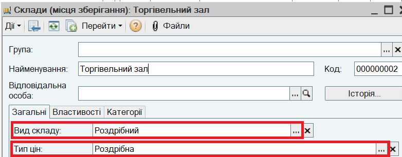
В реквізиті Тип цін зазначено колонку прайс-листа, за якою здійснюється продаж в магазині. Значення роздрібних цін вже зафіксовані в документі Встановлення цін номенклатури.
2. Введіть інформацію про Касу ККМ. Для цього відкрийте пункт меню Довідники - Грошові кошти - Каси ККМ і створіть новий елемент довідника:
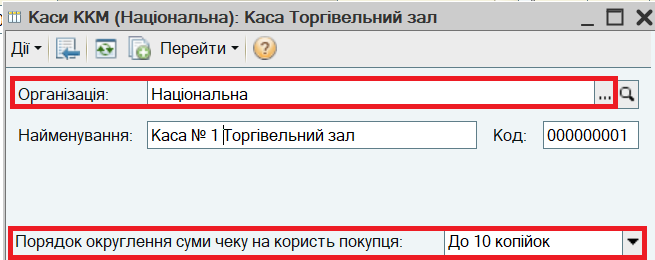
ПРИМІТКА.
Каса ККМ - це грошова скринька контрольно-касової машини при оформленні роздрібних продажів через ККМ, підключену в режимі фіскального реєстратора, або місце зберігання грошових коштів у разі продажу із застосуванням ПРРО.
3. Налаштуйте можливість оплати платіжними картками. Для цього відкрийте пункт меню Сервіс - Настройки обліку - Настройка параметрів обліку і на закладці Загальні увімкніть прапор Використовувати оплату платіжними картками.
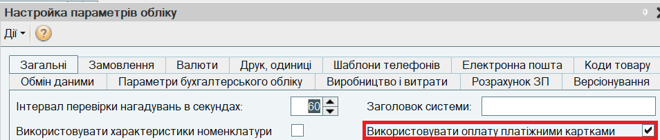
4. Відкрийте пункт меню Довідники - Грошові кошти - Види оплати чека ККМ. Довідник містить вид оплати Готівка. Додайте вид оплати платіжною карткою:
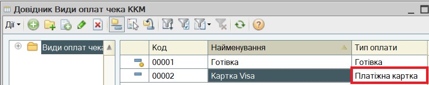
5. Внесіть інформацію про банк-еквайрер в довідник Контрагенти. Для контрагента не заповнюються прапори Покупець та Постачальник. Автоматично створюється "Основний договір" виду Інше.
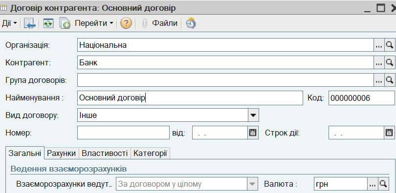
6. Зареєструйте договір еквайрингу. Для цього відкрийте пункт меню Довідники - Підприємство - Договори еквайрингу і створіть новий договір. В заголовку зазначте Еквайрера, в табличній частині - Вид оплати платіжною карткою та відсоток комісії банку.
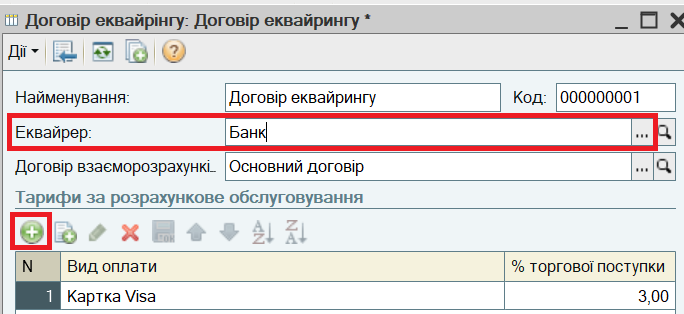
7. Оформіть переміщення товарів з "Головного складу" до "Торгівельного залу". Для цього відкрийте пункт меню Документи - Запаси (склад) - Переміщення товарів. Створіть новий документ:
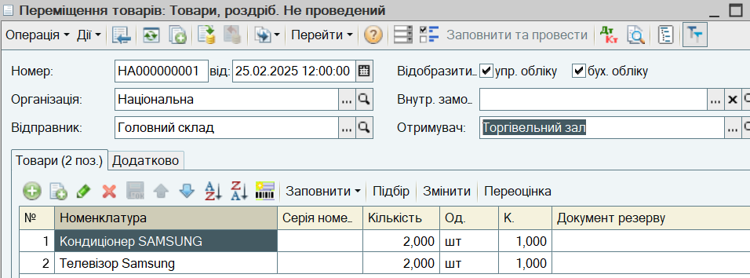
Збережіть документ, не проводячи його, за кнопкою Записати.
ПОРАДА.
При підборі товарів в документ використовуйте варіант підбору По залишкам номенклатури, для того щоб контролювати залишки товарів на складі-відправнику.
8. Натисніть на кнопку Переоцінка. Буде створений документ Переоцінка товарів у роздробі. Документ фіксує ціни роздрібного продажу в "Торгівельному залі".
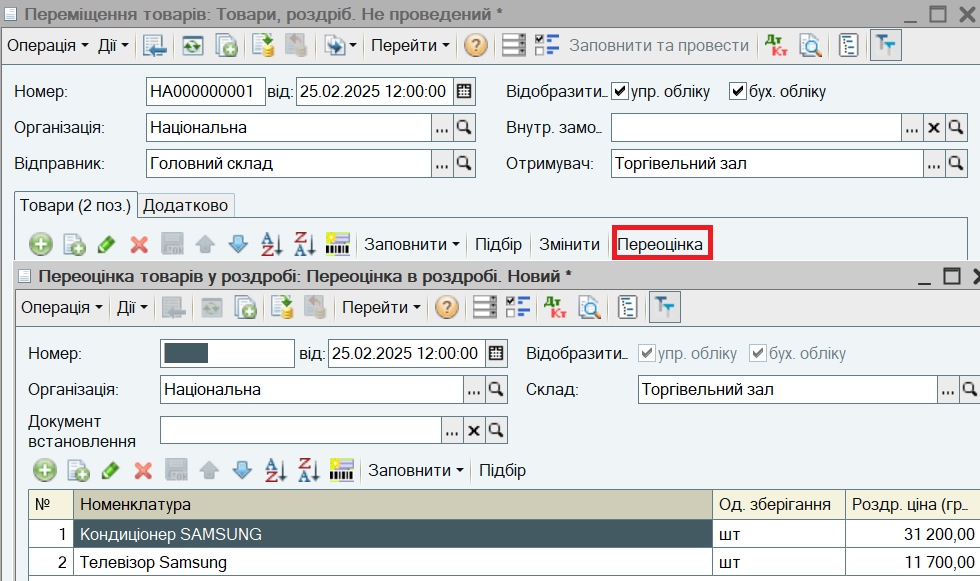
Натисніть на кнопку ОК і проведіть документ Переоцінка товарів у роздробі.
9. Натисніть на кнопку ОК і проведіть документ Переміщенння товарів.
10. Внесіть розмінну монету до Каси ККМ. Для цього відкрийте пункт меню Документи - Грошові кошти - Каса - Видаткові касові ордери і введіть документ Видатковий касовий ордер з видом операції Видача грошових коштів в касу ККМ.
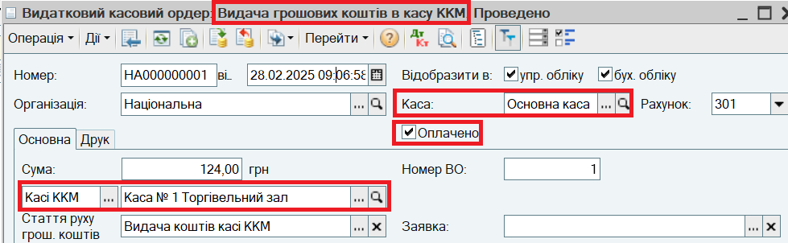
11. Введіть Чек ККМ. Для цього відкрийте пункт меню Документи - Роздріб - Чеки ККМ і створіть новий документ:
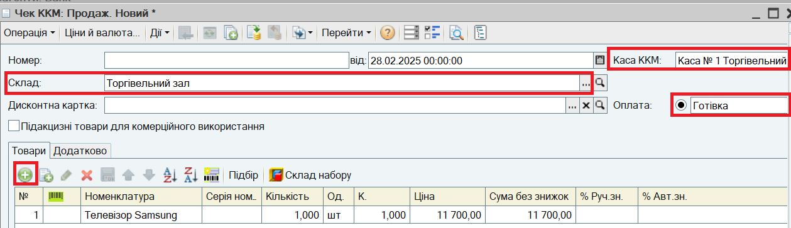
Ціна продажу визначається автоматично.
ВАЖЛИВО.
Для оформлення роздрібних продажів можна використовувати більш зручний інтерфейс - Інтерфейс касира. Інтерфейс касира використовується, якщо до компьютера підключено фіскальний реєстратор або ПРРО.
При підборі товарів в документ можна використовувати сканер штрихкодів, якщо його підключено.
12. Зазначте Суму оплати. Проведіть документ.
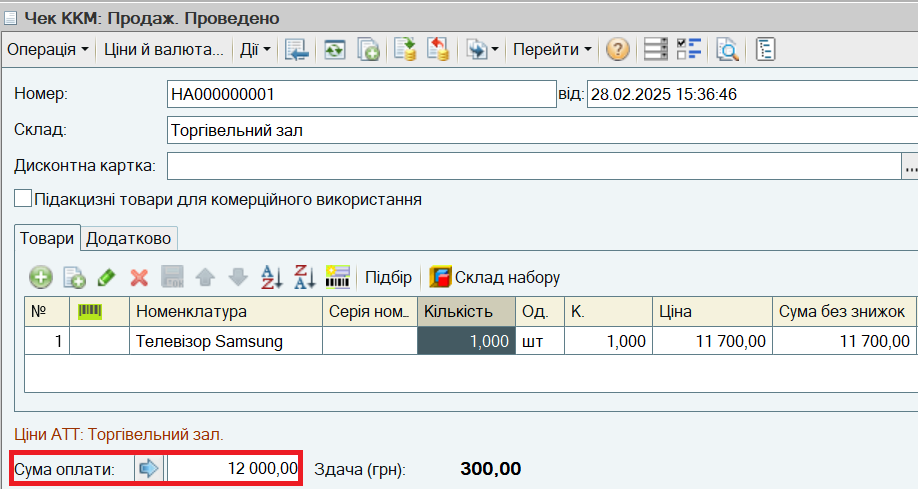
ПРИМІТКА.
Якщо до компьютера підключено фіскальний реєстратор або ПРРО, при проведенні документа Чек ККМ буде пробито фіскальний чек на (П)РРО.
ПОРАДА.
Для автоматичного заповнення Каси ККМ и Складу встановіть ці значення по умовчанню в настройках користувача (пункт меню Сервіс - Настройки користувача).
13. Створіть і проведіть Чек ККМ з розрахунком платіжною картою. Суму оплати заповніть за кнопкою .
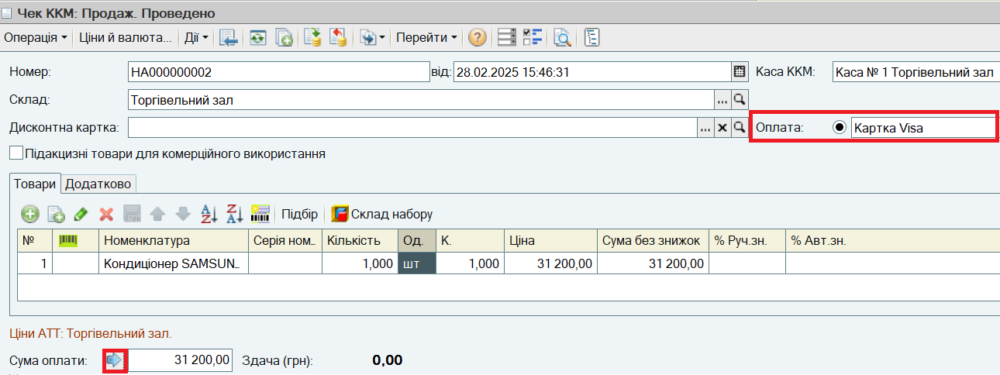
14. В кінці дня здійсніть закриття касової зміни. Для цього виберіть пункт меню Документи - Роздріб - Закриття касової зміни. Зазначте Касу ККМ і натисніть на кнопку Закрити зміну. Буде автоматично сформовано і відкрито документ Звіт про роздрібні продажі, в якому відображено всі продажі за зміну, зафіксовані документами Чек ККМ. Чеки ККМ будуть вилучені.
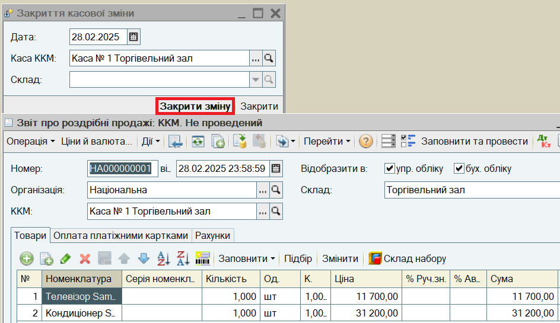
ПРИМІТКА.
Якщо до компьютера підключено фіскальний реєстратор або ПРРО, буде сформовано Z-звіт на (П)РРО.
15. Перейдіть на закладку Оплата платіжними картками і зазначте Договір еквайрингу.
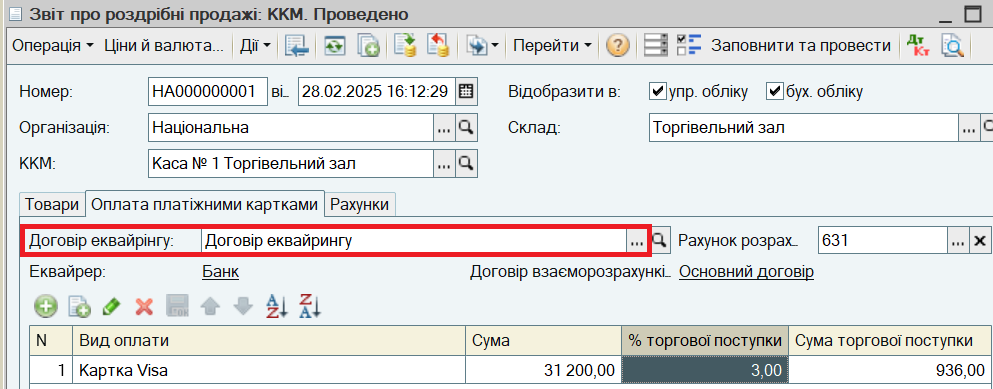
Проведіть документ Звіт про роздрібні продажі.
16. Відобразіть виймання роздрібного виторгу з Каси ККМ. Для цього на підставі документа Звіт про роздрібні продажі документ Прибутковий касовий ордер. Заголовок і закладку Виторг повністю заповнено. В документі зазначено Суму готівки, що надходить до Каси, а також інформацію Z-звіту:
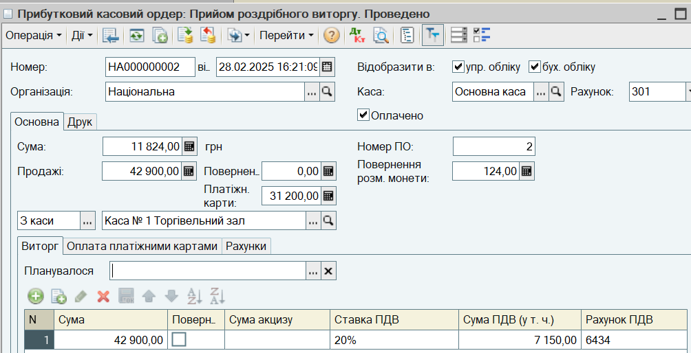
17. На закладці Рахунки зазначте Статтю доходів.
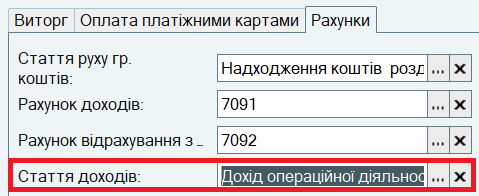
Проведіть документ.
18. При надходженні коштів від еквайрера введіть документ Платіжне доручення вхідне з видом операції Надходження оплати за платіжними картками. В заголовку зазначте Суму, що фактично надійшла, та Платника (еквайрера). На закладці Облік витрат зазначте Суму послуг - суму комісії, стягнутої еквайрером, та Рахунок витрат 93.
Наступний розділ: "Продаж товарів в неавтоматизованій торгівельній точці"